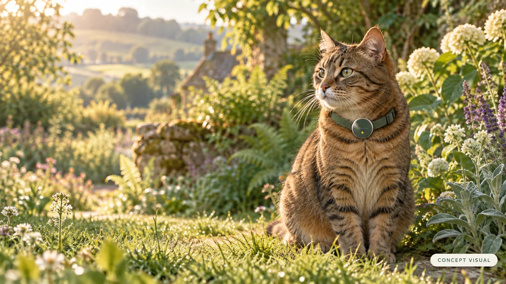
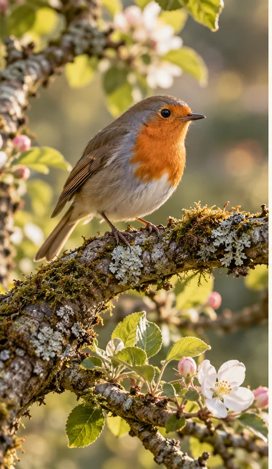
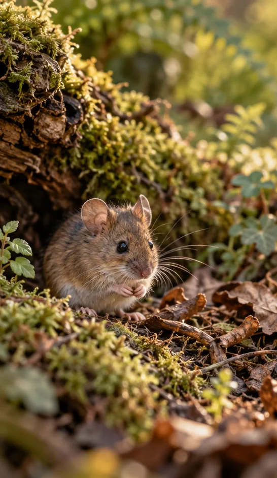
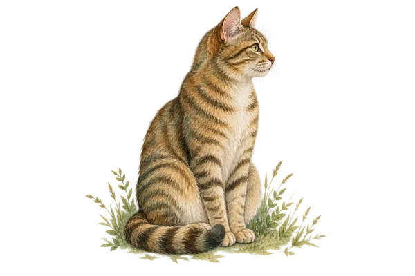
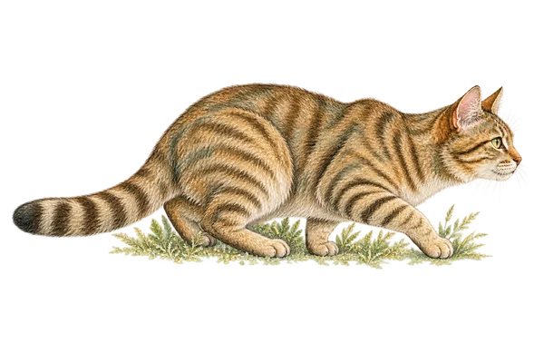
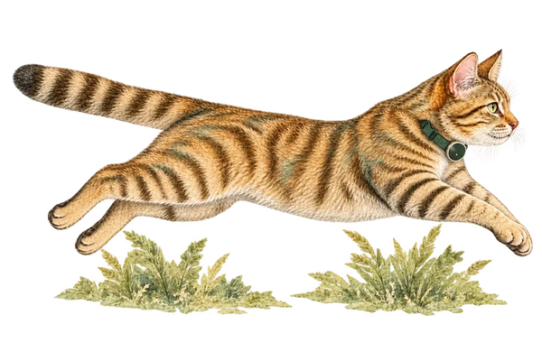
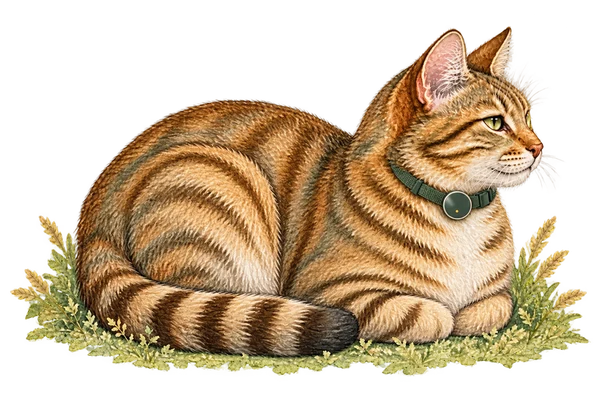
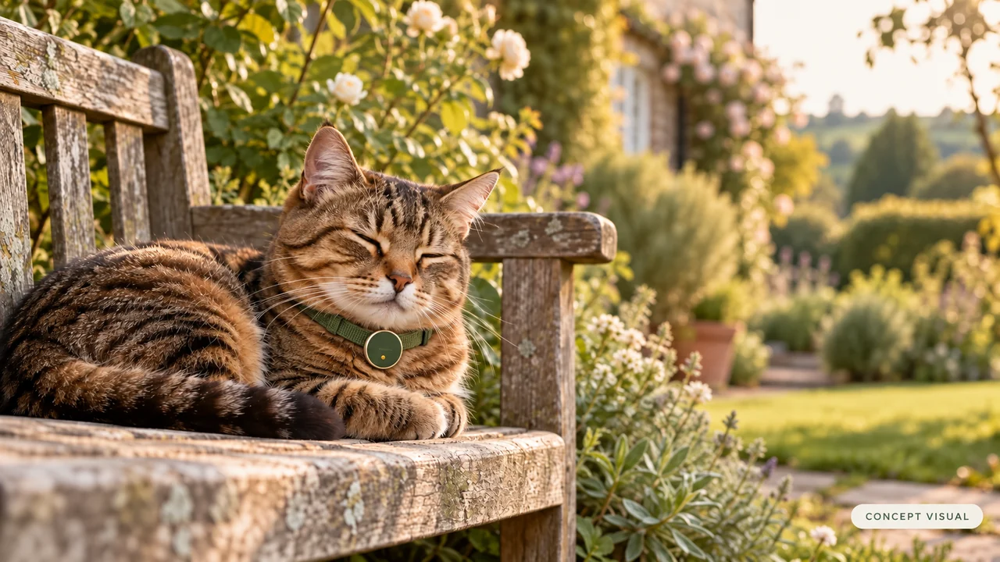

For cat people who love wildlife too
For the cat you love.
And the wildlife, too.
A smart cat collar module built to warn wildlife before the pounce.
Your cat is doing exactly what a cat does. Pouncer is designed to fit the collar they already wear, with a simple aim: a little warning for wildlife, and a quiet day for your cat.
In active development. Collar imagery is a concept visual. Explore the evidence.

Nature lives next door
A little more room for nature.
For garden birds, wood mice and the little lives you rarely see. A shared space for the cat you love and the wildlife you care about.
The evidence behind the idea

The idea, in four movements
Quiet by design.
The opportunity starts before the leap. Pouncer is being developed to recognise the build-up to a pounce and give wildlife an early warning during the stalk — then return to quiet.
-

1Observe
The collar records movement. The aim is to leave walking, resting and everyday activity quiet while looking for a possible hunting sequence.
-

2Warn during the stalk
The research goal is to recognise preparation for a pounce and give a brief warning before launch. A visual pulse is one option; cue type and timing need testing.
-

3Follow the pounce
Record what follows the early signs. Did the cat launch, pause or walk away? Comparing these sequences will help test detection and warning timing.
-

4Settle & record
The design includes a quiet cooldown to limit repeated cues, with candidate events logged for review and future improvement.
This is the design we are testing. Early recordings will explore whether movements such as the hind-leg “wobble” can signal a pounce in time to warn wildlife. Reliable detection, false alerts and wildlife benefit still need testing. Follow the development.
Considered in every detail
A small module. A thoughtful design.
A small disc for the quick-release collar your cat already wears. Designed for everyday adventures, with a replaceable battery and your cat’s movement records kept on your own device.

Assembled — one disc on the collar
Our design commitments
- Fit a standard quick-release collar, keeping its existing strap and buckle
- A battery you can replace, so the module can stay in use
- No GPS and no location tracking — it records motion, not where your cat is
- Download movement records to your own device, without a cloud account
Details still to be confirmed
- Weight, dimensions, battery life, water rating
- Price
We will publish specifications after testing the hardware, and pricing when the manufacturing costs are clearer.
Look inside the concept

These are preliminary concept renders, not finished hardware. Materials, dimensions and internal layout are still being developed.
What works — and what we haven't proven
A 2021 controlled trial compared ways to reduce the prey cats brought home. These results provide context for Pouncer’s development; they are not results for Pouncer.
| Intervention | Change in prey brought home |
|---|---|
| High-meat-content, grain-free food | −36% overall |
| 5–10 minutes of daily play with toys | −25% overall |
| Brightly coloured collar cover (visual) | −42% birds; no discernible effect on mammals |
| Cat bells | No discernible effect in this trial |
| Puzzle feeders | +33% prey brought home |
Bars run from −50% on the left to +50% on the right; the grey line is no change. Every figure is from the same trial, measured against controls and against the households' own pre-treatment period.
What the bell evidence tells us
The table reports one trial, not the whole literature. Bell results are mixed: some studies found fewer prey brought home, while the 2021 trial above found no discernible effect. See the wider evidence.
A mechanical bell responds to movement; it does not classify behaviour. Pouncer is being developed to recognise pre-pounce movement and give a brief cue during the stalk, before launch. That difference is a design hypothesis, not evidence of better timing or fewer animals caught.
Pouncer's detection timing, false alerts, cat welfare and wildlife outcomes all need testing.
Why birds and small mammals? The UK research
A 2003 study estimated roughly 92 million prey items brought home by British cats between April and August. These are historical estimates of prey returned, not a measure of current population decline. The RSPB finds no clear evidence that cat predation drives UK bird declines.
- Mammals 57m voles, shrews, wood mice
- Birds 27m at least 44 wild species
- Reptiles & amphibians 5m frogs, newts, slow-worms
Woods, McDonald & Harris (2003), Mammal Review. The three groups shown account for 89 million of roughly 92 million items.
Where Pouncer actually is
Pouncer is in active development. Here is what we are working on, what comes later and what we still need to establish.
-
In development
Recording movement, storing events on the collar and transferring them to a companion app over Bluetooth are the current development focus.
-
In progress
Recognising hunting sequences in recorded cat movement. We are also developing an enclosure intended to direct any sound cue forward and reduce sound towards the cat.
-
In progress
Pre-pounce detection and warning lead time. Early data collection will pair collar motion with observed behaviour to test whether stalking and preparatory hind-leg movements offer a reliable early signal. Cue type, timing and false-alert limits remain to be established.
-
In progress
Trial planning: compare alerts on and off for the same cat, report results separately for birds and small mammals, and publish the findings whichever way they turn out.
-
On the roadmap
Learning your individual cat. Individual calibration is a future research goal. The event log is being designed to support it, but any improvement in detection remains to be measured.
-
On the roadmap
Companion apps: Windows first, then Android, with iOS and macOS on the longer-term roadmap. There are no release dates yet.
-
On the roadmap
Finding a lost collar, and the cat wearing it, by letting the module advertise as a Bluetooth LE beacon. Garden-sized range, not street-sized, and not Find My. Optional, and only if the broadcast can be made unrecognisable to anyone but your own phone.
-
Not yet claimed
Wildlife benefit, final sound settings and battery life. We will publish results and specifications when testing supports them.
Pouncer is designed to give wildlife a warning, not to guarantee an outcome. It is a complement to diet, play and supervised outdoor time, not a substitute for them, and nothing here is veterinary advice.
Questions
Will the alert distress my cat?
Cat comfort is a design priority. Any sound cue is intended to be brief and directed away from the cat’s ears. The cue type, volume and frequency of alerts must be assessed in welfare testing before they are finalised.
I don't mind my cat catching mice. Isn't that pest control?
Small mammals in gardens include native wildlife such as wood mice, voles and shrews. Pouncer is being developed to recognise the cat’s movement, not identify the animal it is hunting, so it would not distinguish a wood mouse from a house mouse.
How is Pouncer different from a bell?
Pouncer is being developed to recognise motion patterns and choose when to give a cue. A bell is a mechanical sound-maker, with mixed results across wildlife studies. We have not demonstrated that Pouncer warns earlier or reduces catches more effectively. Read the evidence and the limits.
Will it learn my cat's habits?
Personalisation is a future research goal. The first detection model is being developed from recorded movement; event records could later help us explore differences between cats. Any improvement still needs to be measured.
Could the pre-pounce “wobble” give an earlier warning?
That is one of the signals we want to investigate. The question is whether preparatory hind-leg movements produce a recognisable pattern at the collar, early enough to give a useful cue. We need synchronised video and motion data, including play and abandoned stalks, before claiming that they do.
Research using harness-mounted accelerometers has classified cat behaviours. It does not establish pre-pounce prediction by Pouncer or show that a warning will protect wildlife.
What stops it firing during play?
That remains an open testing question: play can include stalking and pouncing too. We will compare hunting, play and ordinary movement in recorded data, including sequences that do not end in a pounce. Confidence thresholds and cooldowns are design tools, not yet proof that false alerts have been solved.
Shouldn't I just keep my cat indoors?
Keeping a cat indoors prevents it from hunting outdoor wildlife. Supervised outdoor time or an enclosed garden can also limit access to prey. Pouncer is being developed for owners whose cats roam outdoors; it cannot guarantee that wildlife will be safe.
Does it replace changing food or playing with my cat?
No. Daily play and a dietary intervention reduced prey brought home in the trial above. Pouncer is intended to complement your cat’s care. Discuss any change of diet with your vet.
Does it track my cat's location?
No. The design records movement, not location, and has no GPS. Movement records are intended to stay on the collar until you download them over Bluetooth. The optional proximity feature described below would indicate how close the collar is, without calculating its position.
If the collar comes off, can I find it? Can I find the cat?
An optional Bluetooth proximity feature is on the roadmap, outside the first release. It would help a nearby phone indicate whether you are getting closer to the collar, rather than show a location on a map.
The target is garden-sized coverage; actual range needs testing and will depend on obstacles. It is not intended to find a cat streets away, and it is not part of Apple’s Find My or Google’s Find My Device network.
Privacy is a condition of developing this feature: it would be optional, and we will not release it unless its broadcast can be made unrecognisable to anyone except the paired phone.
Which phone or computer do I need? Is there an iPhone app?
Windows desktop is the first target, followed by Android. iOS and macOS are on the longer-term roadmap, with no release dates yet. The shared software core is designed to support additional platforms without rewriting the movement analysis.
Does it work with my existing collar?
It is designed as a compact module for standard quick-release collars, so the break-away safety mechanism you already use stays in place.

Be part of what comes next.
Follow the build, hear the trial results and find out when our planned crowdfunding campaign opens.
This opens your email app so you can send a signup request. You can also email us directly. One list, low volume, unsubscribe any time. No payment is taken and nothing is binding — About the update list, and Privacy. Follow along at @PouncerTag.
Sources and further reading
- Geiger et al., Colorful Collar-Covers and Bells Reduce Wildlife Predation by Domestic Cats in a Continental European Setting (2022), Frontiers in Ecology and Evolution. Its introduction discusses differing results across bell studies; its own experiment tested collar covers with and without an added bell. Read the paper.
- Nelson, Evans & Bradbury, The efficacy of collar-mounted devices in reducing the rate of predation of wildlife by domestic cats (2005), Applied Animal Behaviour Science. Read the paper.
- Woods, McDonald & Harris, Predation of wildlife by domestic cats Felis catus in Great Britain (2003), Mammal Review. Wiley
- Cecchetti, Crowley, Goodwin & McDonald, Provision of high meat content food and object play reduce predation of wild animals by domestic cats Felis catus (2021), Current Biology. Cell
- Loss, Will & Marra, The impact of free-ranging domestic cats on wildlife of the United States (2013), Nature Communications. Nature
- Stephen, Laboratory determination of startle reaction time of the starling (Sturnus vulgaris) (1977), Animal Behaviour. ScienceDirect
- RSPB, Are cats causing bird declines? rspb.org.uk